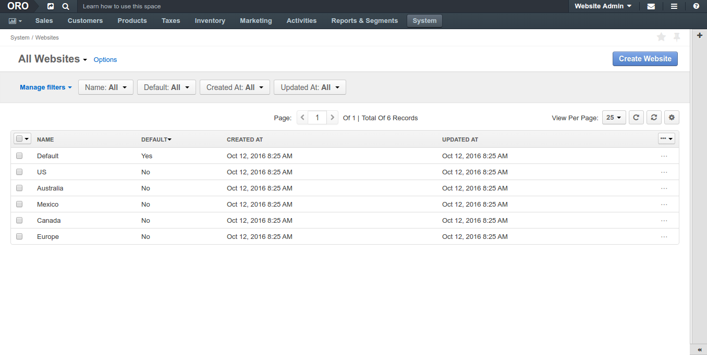
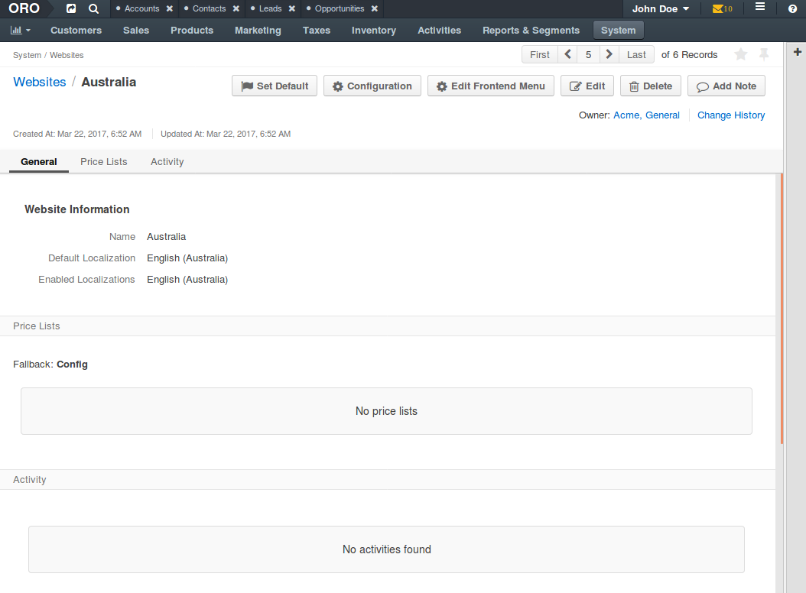
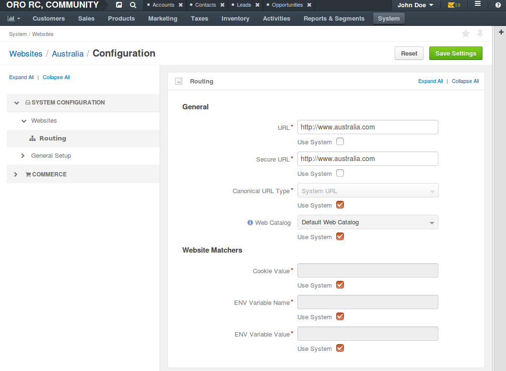

By default, global system configuration settings apply to all newly created websites.
To define the custom configuration options for the particular website:
Navigate to System > Websites using the main menu.
Click on the website you would like to customize configuration for (e.g. Australia).
On the website details page, click Configuration. The following page opens:
In the System Configuration section, you may override the global system configuration for the following option groups:
In the Commerce section, you may override the global system configuration for the following option groups:
Note
Once you are done customizing the global system configuration settings in the option group, click Save Settings.